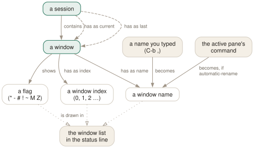

Day 02
Windows
One session per project, one window per concern.
By the end of today you can
- create, name, reorder and destroy windows without leaving the keyboard
- read the window list in the status line, including every flag character
- decide deliberately whether a window renames itself or keeps the name you gave it
Tabs, but they outlive the terminal
A window fills the whole screen and appears as one entry in the status line. If you have used browser tabs you already have the model. What you do not yet have is the habit: most people who install tmux split panes obsessively and never make a second window, which is backwards.
The rule that has held up for years of daily use: one session per project, one window per concern, panes only when you genuinely need to watch two things at once. Editing is a concern. Running the server is a concern. Reading its logs is a concern. Ad-hoc git work is a concern. That is four windows and no splits, and every one of them gets the full width of your terminal.

Making and naming them
C-bc creates a window and switches to it. It lands at the lowest free index, which is not necessarily the end — kill window 2 of 0,1,2,3 and the next C-bc will fill the hole.
The name matters more than the index. C-b, opens a prompt pre-filled with the current name; edit it and press Enter. From then on the status line says 2:logs instead of 2:zsh.
$ tail -F /var/log/app/current
12:04:11 INFO worker started
12:04:11 INFO listening on :8080
Read that bar: session api; window 0 named edit is where I was a moment ago (-); window 2 named logs is where I am now (*).
Getting around
Four movements, in the order you will come to rely on them:
- C-bl
- The previous window. Most switching is really alternation between two things — the editor and the thing you just ran. Learn this one first.
- C-b0 … C-b9
- Absolute jump by index. Fast and unambiguous, as long as your important windows live at low indices.
- C-bn / C-bp
- Next and previous by index, wrapping at the ends. Good for a sweep, bad for a target.
- C-bw
- The interactive picker: a tree of sessions, windows and panes with a live preview of each. Arrows to move, Enter to choose, q to escape, and a shortcut letter in brackets on the left of every line.
Above nine you need C-b', which prompts for an index. If you regularly have more than ten windows in one session, that is usually a sign that two projects have been squeezed into one session — Day 6 is about splitting them apart.
Moving and removing
C-b. prompts for a new index for the current window. If something already sits there you get index in use: 3 and nothing happens — unlike the move-window command underneath it, which will happily take -k to kill the occupant.
# from the command prompt (C-b :) or a shell
$ tmux move-window -t 9 # this window becomes window 9
$ tmux move-window -r # renumber all windows, closing the gaps
$ tmux new-window -a -t 1 # insert right after window 1, shifting the rest
To destroy a window, either exit every shell in it, or C-b& which asks first. kill-window -a kills every window except the target — the fastest way to clean up a session that has grown weeds.
The status line as an instrument
Everything above is visible in one line at the bottom of the screen. Each window is drawn as index:name followed by any flags:
* the current window
- the last window (where C-b l goes)
# activity seen here since you last looked (monitor-activity)
! a bell rang here (monitor-bell)
~ silent for a while (monitor-silence)
M this window holds the marked pane (Day 12)
Z the active pane in it is zoomed (Day 3)
The last three of those are off until you turn them on, which is Day 10's business. For now just learn to read * and - at a glance; they answer “where am I and where does C-bl take me” without thinking.
Today's habit
Stop opening new terminal windows. When you catch yourself reaching for the terminal emulator's own “new tab”, use C-bc instead and give it a name. By tomorrow evening you want the status line to describe your work rather than list four copies of zsh.
New vocabulary
Keys
| Key | Does |
|---|---|
| C-bc | Create a window at the lowest free index. |
| C-b, | Rename the current window — and pin the name. |
| C-bn | Next window by index. |
| C-bp | Previous window by index. |
| C-bl | Back to the last window you were in. The one to actually learn. |
| C-b0 | Jump straight to window 0 (likewise 1 … 9). |
| C-b' | Prompt for a window index — for windows above 9. |
| C-bw | Choose a window from an interactive tree with previews. |
| C-b& | Kill the current window, after a confirmation. |
| C-b. | Move the current window to a different index. |
| C-bi | Flash some information about the current window. |
Commands
| Command | Does |
|---|---|
new-window | Create a window. Alias neww. |
new-window -n logs | Create it with a fixed name. |
new-window -c ~/src/api | Create it with that working directory. |
new-window -d | Create it but do not switch to it. |
new-window -a -t 2 | Insert after window 2, shifting the rest along. |
rename-window api | Rename the current window. |
select-window -t :3 | Switch to window 3 of the current session. |
last-window | Switch to the previously current window. |
kill-window -t :logs | Kill a window by name. |
list-windows | List windows in the session. Alias lsw. |
choose-tree -w | The interactive picker behind C-bw. |
Options
| Option | Does |
|---|---|
automatic-rename | Window renames itself after the running command. On by default. |
automatic-rename-format | The format used when it does. Defaults to the pane's command. |
allow-rename | Whether a program in the pane may rename the window by escape sequence. |
Drillsdo these in a real terminal, today
Self-check
Answer out loud first, then unfold.
What is the difference between C-bn and C-bl?
C-bn is next-window — the next one by index, wrapping round at the end. C-bl is last-window — the one you were in before this one, regardless of index. In practice you alternate between two windows far more often than you sweep through them in order, so C-bl earns its place in your fingers first.
Your window is called zsh, then vim, then zsh again. Nothing in your config does this. What is happening?
automatic-rename is on by default, and it sets the window name from #{pane_current_command} of the active pane. That is exactly why naming a window by hand switches the option off for that window: tmux assumes an explicit name beats a derived one.
You have twelve windows and want number 11. C-b11 does not work. Why, and what does?
Each digit is a separate binding — C-b1 immediately runs select-window -t :1 and the second 1 just goes to the shell. Use C-b' (prompt for an index) or C-bw (pick from the tree). This is also the first good argument for naming windows instead of counting them.
In the status line you see 3:build- and 4:test*Z. Read it aloud.
Window 3 is named build and is the last window you were in. Window 4 is named test, is the current window, and its active pane is zoomed.
The full set: * current, - last, # activity, ! bell, ~ silent, M contains the marked pane, Z zoomed.
Cheat sheet
C-b c # new window (lowest free index)
C-b , # rename it — and stop it renaming itself
C-b l # the last window: the switch you will use most
C-b 0..9 # jump by index; C-b ' prompts for higher ones
C-b w # interactive tree, with previews, tagging and filtering
C-b & # kill window (asks); C-b . move it to another index
Status line: index:name plus * current, - last, Z zoomed, # activity, ! bell, ~ silent, M marked.
Everything through Day 02
Keys
| Key | Does |
|---|---|
| C-bd | Detach this client. The session keeps running. |
| C-b$ | Rename the current session. |
| C-b? | List every key binding. q to leave. |
| C-b: | Open the tmux command prompt. |
| C-bt | Show a clock — a harmless way to prove the prefix works. |
| C-bC-b | Send a literal C-b to the program in the pane. |
| C-bc | Create a window at the lowest free index. |
| C-b, | Rename the current window — and pin the name. |
| C-bn | Next window by index. |
| C-bp | Previous window by index. |
| C-bl | Back to the last window you were in. The one to actually learn. |
| C-b0 | Jump straight to window 0 (likewise 1 … 9). |
| C-b' | Prompt for a window index — for windows above 9. |
| C-bw | Choose a window from an interactive tree with previews. |
| C-b& | Kill the current window, after a confirmation. |
| C-b. | Move the current window to a different index. |
| C-bi | Flash some information about the current window. |
Commands
| Command | Does |
|---|---|
tmux | Start the server if needed and create a session, attached. |
tmux new -s work | Create a session named work. |
tmux new -A -s work | Attach to work, creating it only if absent. |
tmux ls | List sessions on this server. Alias for list-sessions. |
tmux attach -t work | Attach this terminal to work. |
tmux attach -d -t work | Attach, detaching any other client first. |
tmux detach | Detach the current client, from inside or by target. |
tmux rename-session api | Rename the current session. |
tmux kill-session -t work | Destroy a session and everything in it. |
tmux kill-server | Destroy every session. The nuclear option. |
new-window | Create a window. Alias neww. |
new-window -n logs | Create it with a fixed name. |
new-window -c ~/src/api | Create it with that working directory. |
new-window -d | Create it but do not switch to it. |
new-window -a -t 2 | Insert after window 2, shifting the rest along. |
rename-window api | Rename the current window. |
select-window -t :3 | Switch to window 3 of the current session. |
last-window | Switch to the previously current window. |
kill-window -t :logs | Kill a window by name. |
list-windows | List windows in the session. Alias lsw. |
choose-tree -w | The interactive picker behind C-bw. |
Options
| Option | Does |
|---|---|
automatic-rename | Window renames itself after the running command. On by default. |
automatic-rename-format | The format used when it does. Defaults to the pane's command. |
allow-rename | Whether a program in the pane may rename the window by escape sequence. |